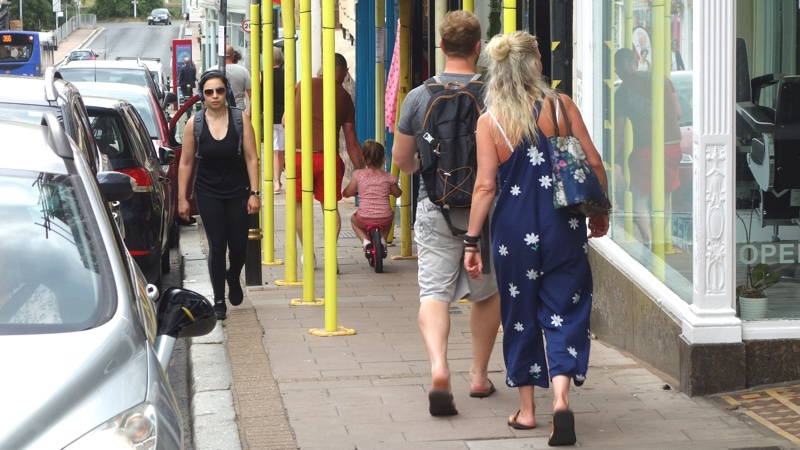
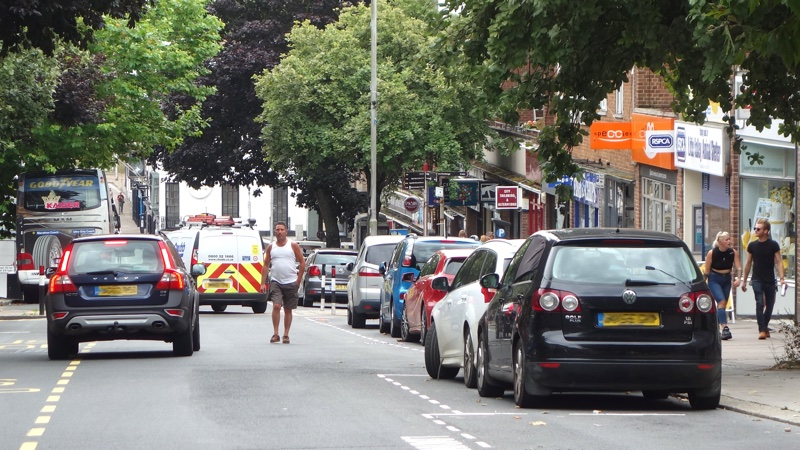
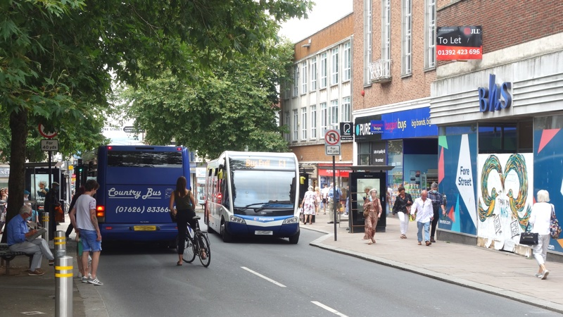
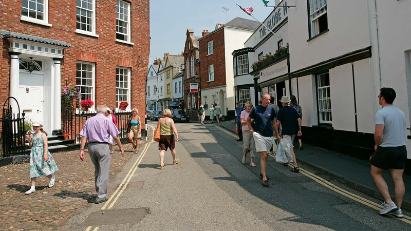

Devon County Council has abandoned its plans for temporary COVID-19 cycling and walking safety measures in Exeter city centre despite widespread support for the changes from survey respondents and consultees.
The proposed changes were to be funded under the first phase of a £250 million coronavirus emergency active travel fund announced by the Secretary of State for Transport on 9 May.
The county council has repeatedly said it would provide “improved foot and cycle access to the city centre via South Street, Fore Street and North Street, including widening of footways with temporary barriers on key pedestrian and public transport route to the city centre, including additional space around busy Cowick Street bus stops.”
Andrew Leadbetter, Devon County Council cabinet liaison for Exeter, initially confirmed the changes would take place by 1 June but work only started elsewhere in Exeter the following week.
Stuart Hughes, Devon County Council cabinet member for highways management, then said the county would be “moving on to additional changes to the city centre” and subsequently confirmed that “further changes” would be introduced “over the next few weeks as the roll-out of this programme continues”.
And Exeter’s Highways and Traffic Orders Committee was told as recently as 22 July that the schemes on Fore Street and South Street were “in progress” while the scheme on Cowick Street was under “discussion”.
However the county council has since said that the first tranche of funding has been spent on measures which have already been installed, while information about the North Street, Fore Street and Cowick Street proposals has been removed from its website and no further details have been provided for the South Street scheme.
 Pedestrians on Exeter Fore Street with limited social distancing space
In addition, Department for Transport guidance specified that any “pop-up” cycling facilities installed under the scheme should have a “minimum level of physical separation from volume traffic” and should use “light segregation features such as flexible plastic wands” and “be segregated as far as possible, i.e. with physical measures separating cyclists and other traffic.”
It continued: “Lanes indicated by road markings only are very unlikely to be sufficient to deliver the level of change needed, especially in the longer term”.
However the changes introduced on Magdalen Road do not physically separate cyclists from traffic, rely on road markings only, and compel cyclists to ride closer to oncoming vehicles than before.
The county council said that the car parking on Magdalen Road was “considered essential by traders”, so in order to provide a “safe amount of room for vehicles to manoeuvre in and out of the spaces” a cycle lane with “lined segregation” was implemented. As a consequence, the cycle lane is obstructed when drivers swing across it in order to park.
The county council also said the guidance did not say that cycle lanes must be segregated.
 A man crosses Exeter South Street between moving and parked cars
At the end of May Exeter City Futures convened a wide range of stakeholders including county councillors, city councillors, Exeter’s chief executive and MP and others for an “Emergency Transport & Travel Roundtable” which discussed transport proposals for the city.
A subsequent report which described participants as a “balanced mix of representation” recorded their recommendations for a series of “top priorities for action” which included closing arterial routes, significantly improving cycle routes, trialling a congestion charge, pedestrianising the city centre and reallocating road space for buses and cyclists.
And in June Exeter Cycling Campaign conducted a community survey which received responses from more than 900 people in just ten days, 90% of whom were car owners.
96% of respondents were in favour of low traffic neighbourhoods, 95% said they would feel safer cycling in the city if separate bike paths were built, 69% wanted less motor traffic on residential streets and 55% supported the introduction of lower speed limits.
 A cyclist, buses and pedestrians on Exeter Fore Street
However a presentation by the county council’s Head of Planning, Transportation and Environment to Exeter’s Highways and Traffic Orders Committee on 22 July said that, alongside public support and a majority in favour, there was “pushback” from traders who were “typically less receptive to changes”.
It was told that the North Street scheme that the county had proposed, which would have included a contraflow leading to the signalised junction of North Street, Paul Street and St David’s Hill, was “too complex”, although South Street, Fore Street and Cowick Street also include signalised junctions.
The committee was also told that further liaison was still to take place with traders on Fore Street and South Street and discussion with local members on Cowick Street.
The committee members then agreed to delegate further decisions concerning any new “pop-up” schemes, and further changes to existing schemes, to the county council Head of Planning, Transportation and Environment in consultation with the committee chair and local member.
It also agreed to keep existing temporary walking and cycling measures until 13 October this year, when they will be reviewed following consultation. The government guidance allows them to stay in place for up to eighteen months.
The committee also heard that the county plans to spend £318,203 of the second round of funding on three permanent changes in Exeter, none of which are in the city centre.
Detailed reports to the committee examined these three changes, which are listed in the Exeter schemes the county council has included in its bid for second round funding, due for submission on 7 August.
The bid also mentions “South Street and Fore Street cycle improvements”, but provides no further details.
Topsham Fore Street temporary pedestrianised zone proposals. Source: Exeter City Council.
The July meeting of Exeter’s Highways and Traffic Orders Committee was also told that proposals for similar coronavirus emergency measures in Topsham which would have temporarily turned its Fore Street into a pedestrianised zone had been discussed but were not part of the government scheme.
A seven day public consultation concerning these proposals, which were promoted by Exeter City Council as part of a government initiative to re-open High Streets, was held in the form of an online “snap poll”. This then informed a decision not to proceed with the changes. The results of the poll were removed after it concluded, and are no longer available in the public domain.
The “Topsham Councillor Team” Facebook page, which is published on behalf of the city council’s three Topsham ward councillors, Andrew Leadbetter (who is both a city and county councillor), Rob Newby and Keith Sparkes featured this post on the day the poll opened:
“Exeter City Council are likely to shut Fore Street in Topsham to traffic as part of their Covid 19 response. You may have seen other restrictions in other parts of the city that are contributing to traffic congestion such as making Magdalen Road, one way.
“These measures are causing hardship to local businesses and are widely opposed. The Topsham Ward Councillors are concerned, having already talked to traders and local residents.
“We are aware that before Covid 19 shops in Topsham saw a dramatic drop in trade due to street works that stopped cars using the short term free parking. This latest experiment could last for 18 months. The closure does not have the support of Devon County Council, or local traders.
“We would urge you to voice your objection directly to Exeter City Council by filling in their 1 minute survey that can be found at [broken link] and also ask that you complete our quick straw poll that can be found on our facebook page.”
 Pedestrians on Topsham Fore Street. Photo: Exeter City Council.
The Facebook poll was prefaced with: “Exeter City Council are proposing to close Fore St Topsham to vehicles and bicycles to enforce social distancing. The road closure could impact dramatically on local shops and could last for up to 18 months.
“Is this a good idea when shops are struggling to survive following Covid 19?”
A protest was then held on 29 June, the day before the “snap poll” closed, organised by traders and residents “to stop Topsham ‘being turned into a ghost town’”.
It appears Devon County Council did not engage in pubic consultation on the issue, despite its officers collaborating with with Exeter City Council officers on the proposals, and it remains unclear who took the decision to drop the proposals.
A county council spokesperson said: “Not all of the proposed changes in Exeter have been realised, partly due to the limited funding available, while some changes have also been made as a result of consultation, and as lockdown has eased across the country.
“We have listened to feedback and amended proposals accordingly. This reflects the statutory guidance, which states that, ‘local businesses, including those temporarily closed, should be consulted to ensure proposals meet their needs when they re-open’”.
However, the guidance also says it does not replace the 2004 Network Management Duty Guidance, which states that the local transport authority: “should seek the views of residents, local businesses and the different road users both when deciding which policies on network management to adopt and when monitoring whether these policies are delivering the required outcomes.”
It goes on to say: “When developing strategies and processes for improving the operation of the road network, local transport authorities should consult with the public, frontagers, representatives of road users and neighbouring authorities with an interest.
“Focus groups of representative street users and facilitated meetings with representatives of street users and adjoining authorities are other useful means of consultation.
“One of the findings from several consultation exercises carried out by local transport authorities is that the public have little idea of who is responsible for the management of the road network in their area and would welcome a well publicised method of contacting someone responsible.”
The day after the decision to drop the Topsham scheme was announced, the county council cabinet approved a £27 million increase on highways spending this year, making the “largest ever annual investment in Devon’s road network”.
It has since announced that the junction of North Street and South Street in Exeter city centre will be closed next week, not for the installation of temporary emergency active travel infrastructure, but to resurface the carriageway.
Devon County Council initially failed to respond to a request for comment on the issues raised in this article.
It subsequently responded after the article was published, which has been amended to reflect answers to some of the questions asked.
In its response Devon County Council also said: “The first tranche of Active Travel measures has to be introduced within eight weeks of receiving the funding, which takes us up to the end of August”.
As this contradicted the Department for Transport guidance (reproduced on the county council’s website that work on reallocation of road space under the first phase of the scheme should be completed within eight weeks of starting (so by 31 July), the Department for Transport has been approached for clarification.
UPDATE 6pm 5 August 2020
The Department for Transport has now responded and confirmed that it subsequently agreed that the eight week delivery period would begin on 6 July, when funding was disbursed, so the county council is correct to say that the deadline for delivery of the first tranche of active travel measures is 31 August.
The article has been amended accordingly.
However, as the county council has also said that the first tranche of funding has been spent on measures which have already been installed, and has not responded to a request for clarification of the status of the temporary Exeter city centre changes, the available information continues to support the conclusion that none of the proposed first phase city centre schemes will now be delivered.
The county council was also asked, and failed to respond to, the following questions:
- Why was a less complex North Street scheme that would have facilitated delivery not proposed?
- How has informal consultation with non-trader stakeholders been incorporated into decision-making about changes in Exeter city centre under this scheme?
- How were the Topsham proposals to be funded?
- Did the proposed Topsham Fore Street closure have the support of Devon County Council?
- Did Devon County Council engage in public consultation concerning the Topsham proposals?
- On what basis was the decision not to proceed with the Topsham proposals taken?
- Does this approach to public consultation meet the standards for good governance contained in Devon County Council’s Annual Governance Statement?
It was also asked for a simple summary breakdown indicating where the £150,000 tranche one emergency active travel scheme funding allocated to Exeter has been spent, including the amount spent in each location, but did not supply this information.


{kind=link}